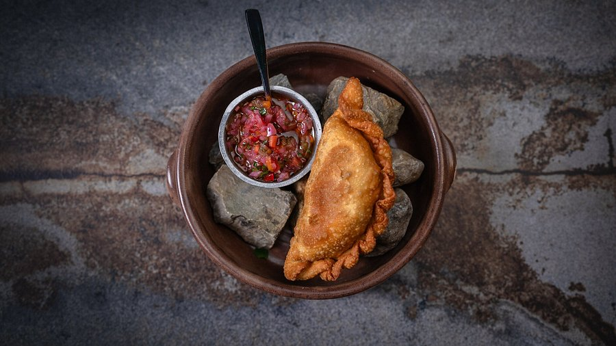
Cocina de fuegos · Colonia del Sacramento
El Otro Portón
Somos fuego desde 1984 . Una parrilla con infiernillo, una cocina a la vista. Te esperamos.
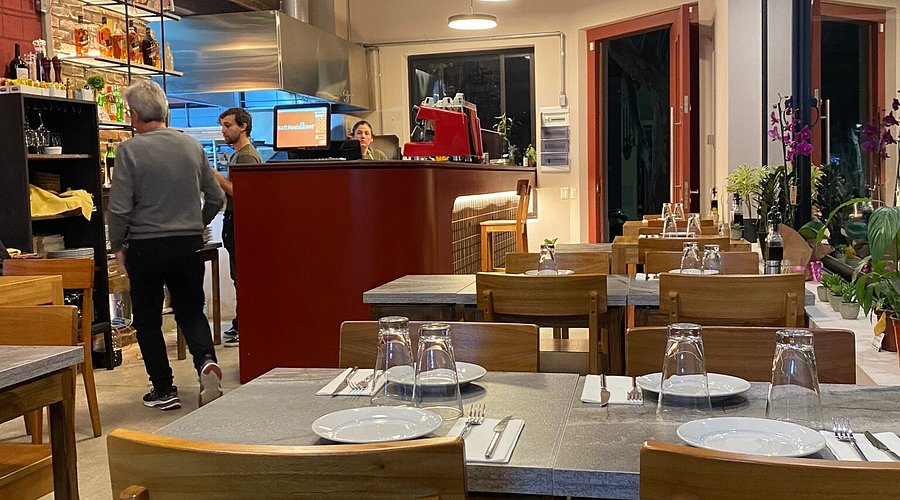
Nuestra historia
La llama de la historia
Mantenemos la llama de la historia y la familia, pero con una mirada innovadora.
Somos tradicionales con un toque de innovación. Combinamos productos locales en nuestra cocina de fuegos.
Una parrilla con infiernillo y una cocina a la vista. En el local también hubo lugar para artistas en vivo con Live Art.
El local y lo que sale del fuego
Donde el ambiente también se disfruta
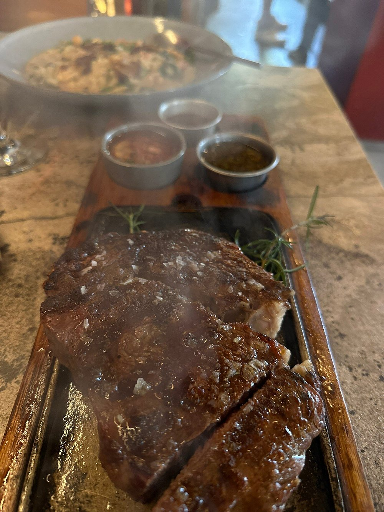
El fuego nos inspira
Nuestra parrilla
Nuestra parrilla destaca por las carnes, acompañadas de criolla y chimichurri especiales de la casa.
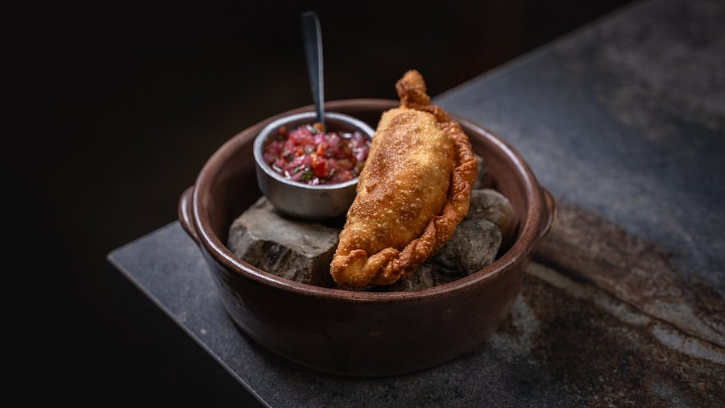
Para empezar
Para compartir
Del fuego, directo al plato
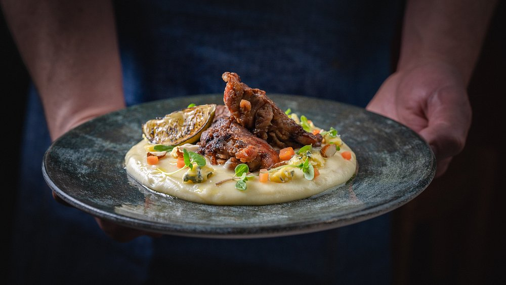
Parrillada ✦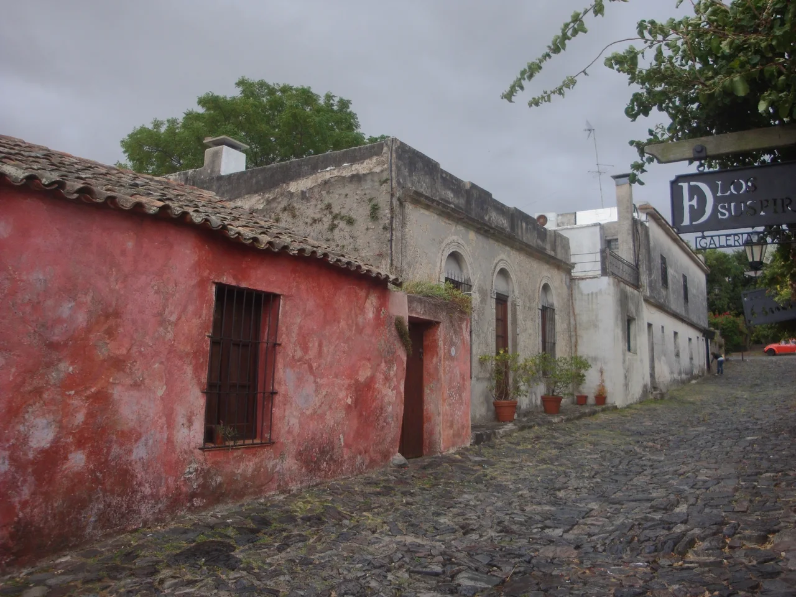
Colonia ✦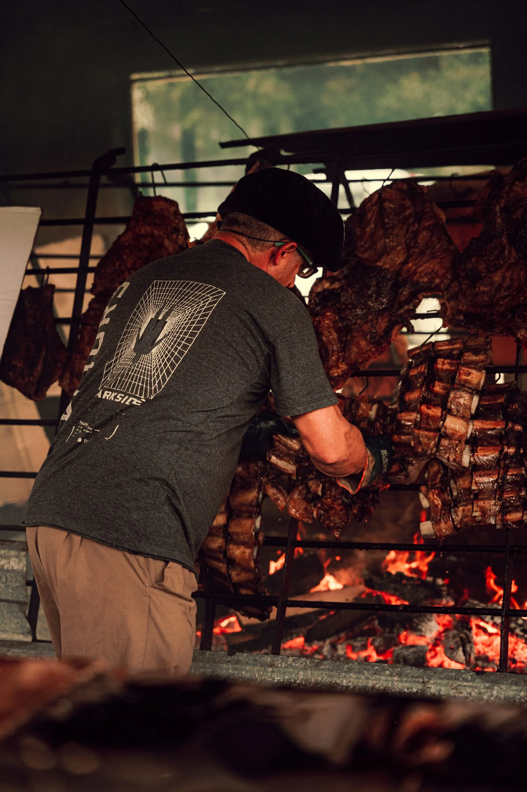
Al fuego ✦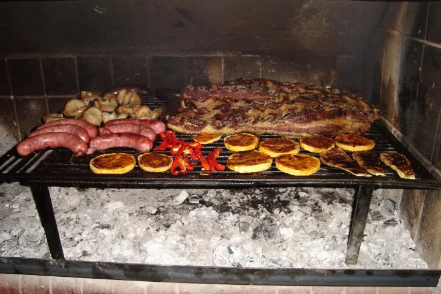
Brasas ✦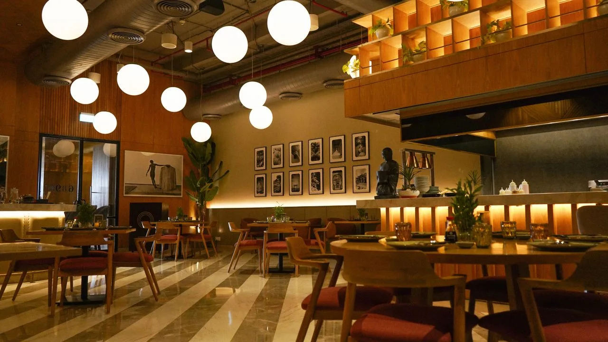
Ambiente ✦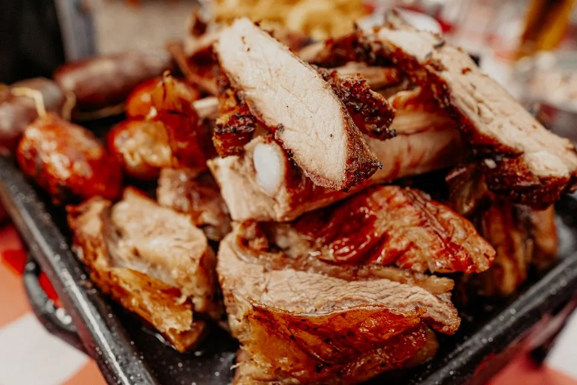
A la mesa ✦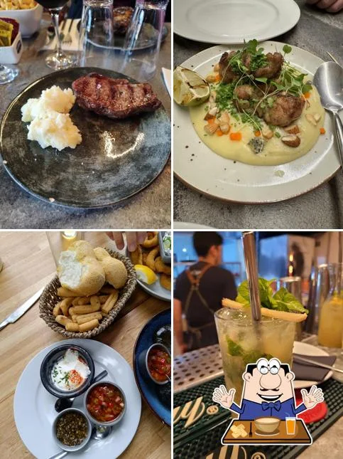
Platos de la casa ✦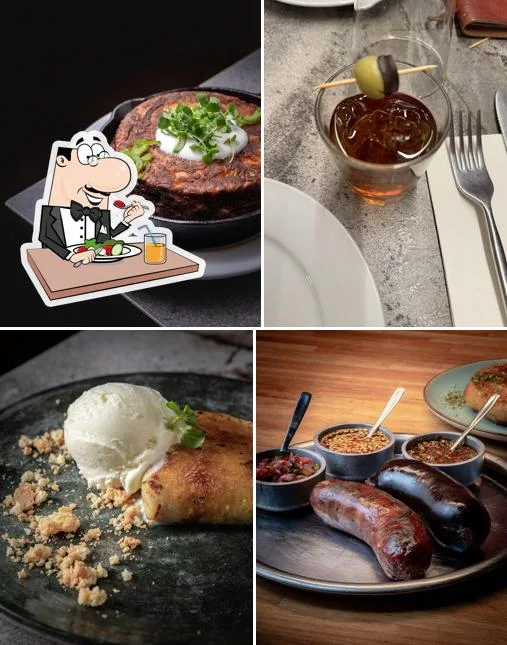
Sobremesa ✦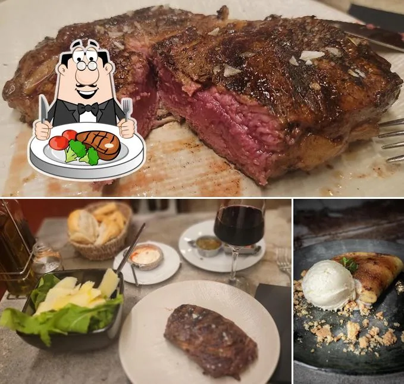
Cortes ✦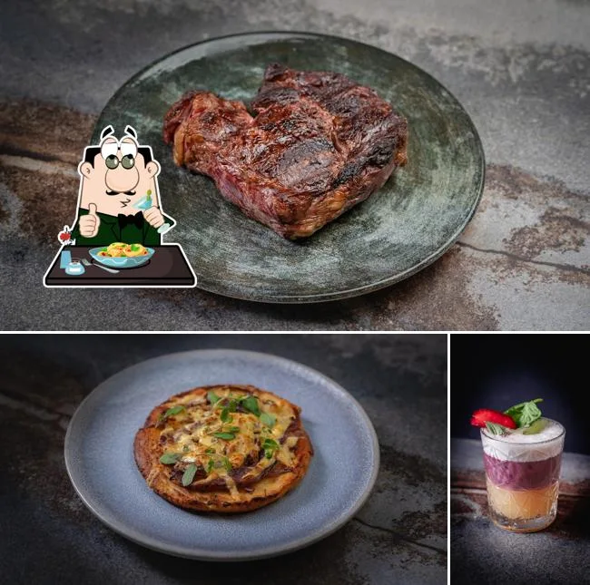
De la cocina ✦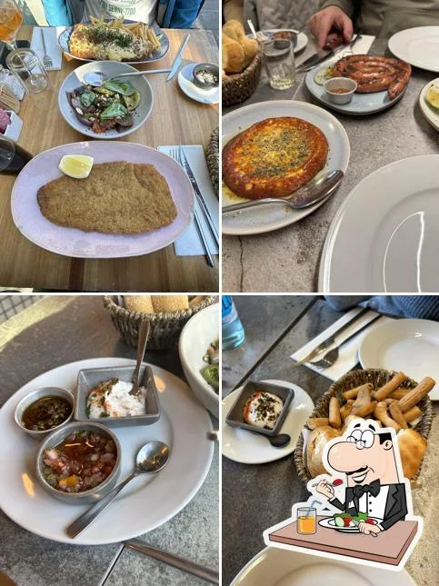
Para compartir ✦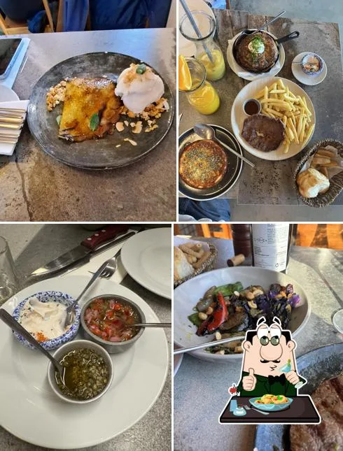
En la mesa ✦
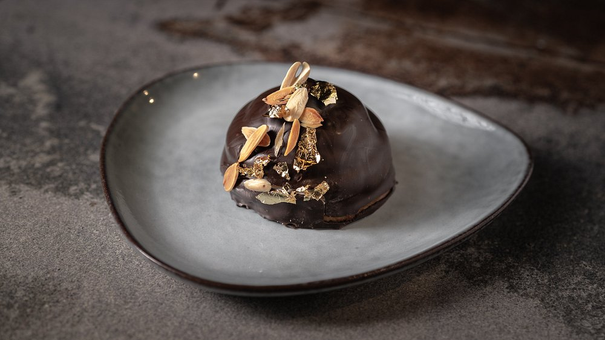
El toque final lo cambia todo
Probaste El Negro?
Un postre con nuestra historia, en honor a nuestro «Negro» Martínez, fundador de El Portón, padre, abuelo, amigo, vecino.
El ritual empieza antes del primer brindis.
Explorá la cartaReservas · Colonia del Sacramento
Reservá tu mesa
Vení a cenar con nosotros. Siempre tenemos algo para sorprenderte.
- Dónde estamos
- Intendente Suárez esquina 18 de Julio · 18 de Julio 351, Colonia del Sacramento
- Horarios
- Jueves a lunes · 12:00–15:30 y 20:00–23:30
Cerrado: martes y miércoles - Teléfono / WhatsApp
- +598 99 514 133